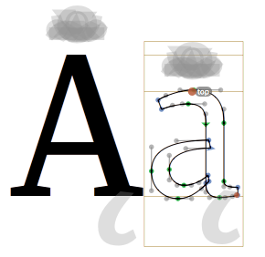

This shall explain how composite glyphs are made and how components and anchors work
In Glyphs, accented glyphs are made from components. So you draw a letter once and use a component of this glyph in all accented glyphs. Glyphs automatically keeps the spacing and alignments of the components. To position the accents, glyphs uses anchors.
You can’t move the components in an accented glyph directly. Move the anchors in the base glyph instead.
If you select a anchor, Glyphs draws all possible anchors at the anchors position. This is the position where is would be in the composite glyph.
If there are no anchors in the glyph you can use one of the following options.
Select "Menu" > "Layer" > "Set Anchors"
Right click in the edit view and select: "Add Anchor"
Name the anchor with the anchor inspector. Use "top" and "bottom" in letters and "_top" and "_bottom" in the accents.
If you generate a glyph, components are use according to the glyph info database integrated in Glyphs.
If a glyph that is supposed to be a composite glyph has outlines or otherwise does not work as expected:
Select "Menu" > "Layer" > "Make Component Glyph"